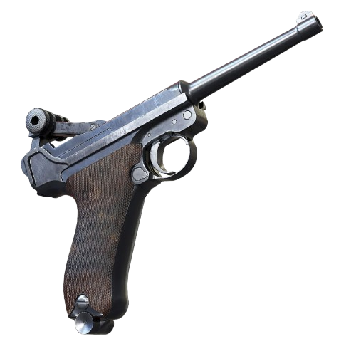

Diseñada por Georg Luger en 1898, la Pistole 08 es una de las armas cortas más reconocibles de la historia militar. Destacó por su ergonomía única y su distintivo cerrojo articulado de rodillera.
| CARACTERÍSTICA | LUGER P08 | MAUSER C96 | WALTHER P38 |
|---|---|---|---|
| Año de Entrada | 1908 (Reichswehr) | 1896 | 1939 (Wehrmacht) |
| Mecanismo de Disparo | Acción simple con cerrojo de rodillera | Acción simple con martillo expuesto | Doble acción / Acción simple (DA/SA) |
| Seguridad / Fiabilidad | Sensible a la suciedad y tierra del frente | Mecanismo complejo sin tornillos; fiable si limpia | Seguro desamartillador (Decocker) revolucionario |
| Producción Total | ~3.5 Millones | ~1.1 Millones | ~1.2 Millones (durante la guerra) |
| Costo de Fabricación | Muy alto (mecanizado manual complejo) | Muy alto (requería aceros especiales) | Moderado (diseñada para producción masiva) |